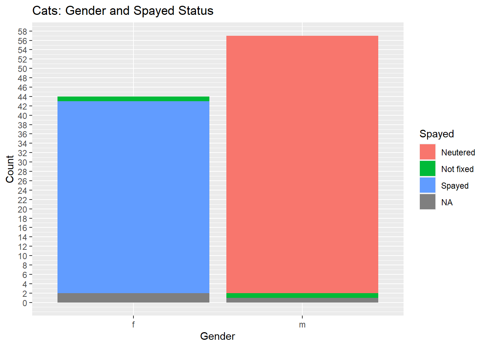
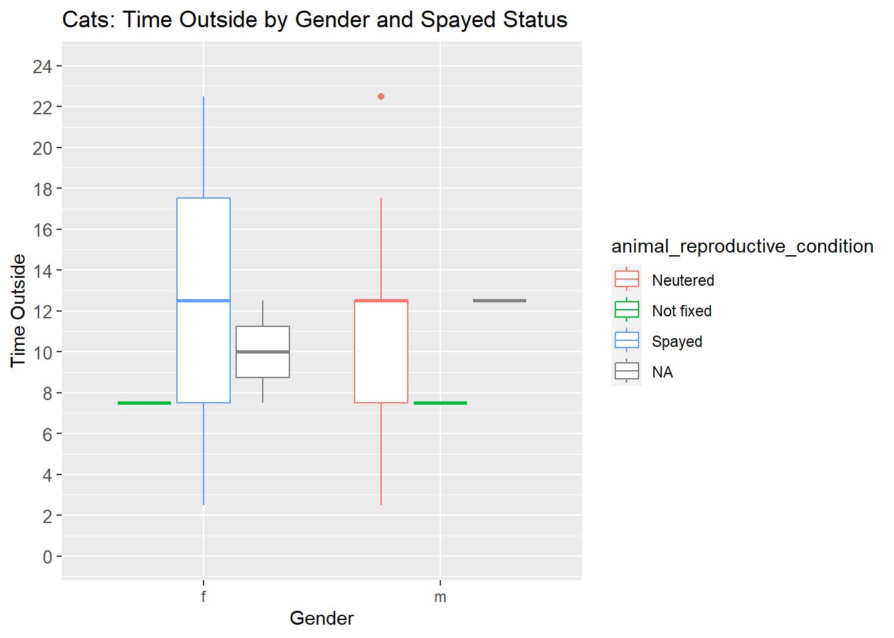

library(tidyverse)── Attaching packages ─────────────────────────────────────── tidyverse 1.3.2 ──
✔ ggplot2 3.4.1 ✔ purrr 1.0.1
✔ tibble 3.1.8 ✔ dplyr 1.1.0
✔ tidyr 1.3.0 ✔ stringr 1.5.0
✔ readr 2.1.3 ✔ forcats 1.0.0
── Conflicts ────────────────────────────────────────── tidyverse_conflicts() ──
✖ dplyr::filter() masks stats::filter()
✖ dplyr::lag() masks stats::lag()library(ggplot2)
library(dplyr)
data <- read.csv("https://raw.githubusercontent.com/rfordatascience/tidytuesday/master/data/2023/2023-01-31/cats_uk_reference.csv")
# Create a data visualization
ggplot(data, aes(x = animal_sex, fill = animal_reproductive_condition)) +
geom_bar() +
labs(x = "Gender", y = "Count", title = "Cats: Gender and Spayed Status") +
scale_fill_discrete(name = "Spayed")+
scale_y_continuous(breaks = seq(0 , 70 , by = 2) )
ggplot(data, aes(x = animal_sex, y = hrs_indoors, color = animal_reproductive_condition)) +
geom_boxplot() +
labs(x = "Gender", y = "Time Outside", title = "Cats: Time Outside by Gender and Spayed Status") +
scale_fill_discrete(name = "Spayed")+
scale_y_continuous(breaks = seq(0, 24, by = 2), limits = c(0, 24)) +
theme(axis.text.y = element_text(size = 10))
cats_uk <- readr::read_csv('https://raw.githubusercontent.com/rfordatascience/tidytuesday/master/data/2023/2023-01-31/cats_uk.csv')Rows: 18215 Columns: 11
── Column specification ────────────────────────────────────────────────────────
Delimiter: ","
chr (2): tag_id, study_name
dbl (5): event_id, location_long, location_lat, ground_speed, height_above_...
lgl (3): visible, algorithm_marked_outlier, manually_marked_outlier
dttm (1): timestamp
ℹ Use `spec()` to retrieve the full column specification for this data.
ℹ Specify the column types or set `show_col_types = FALSE` to quiet this message.# Read the cats_uk dataset
cats_uk <- readr::read_csv('https://raw.githubusercontent.com/rfordatascience/tidytuesday/master/data/2023/2023-01-31/cats_uk.csv')Rows: 18215 Columns: 11
── Column specification ────────────────────────────────────────────────────────
Delimiter: ","
chr (2): tag_id, study_name
dbl (5): event_id, location_long, location_lat, ground_speed, height_above_...
lgl (3): visible, algorithm_marked_outlier, manually_marked_outlier
dttm (1): timestamp
ℹ Use `spec()` to retrieve the full column specification for this data.
ℹ Specify the column types or set `show_col_types = FALSE` to quiet this message.# Create a histogram of ground speed